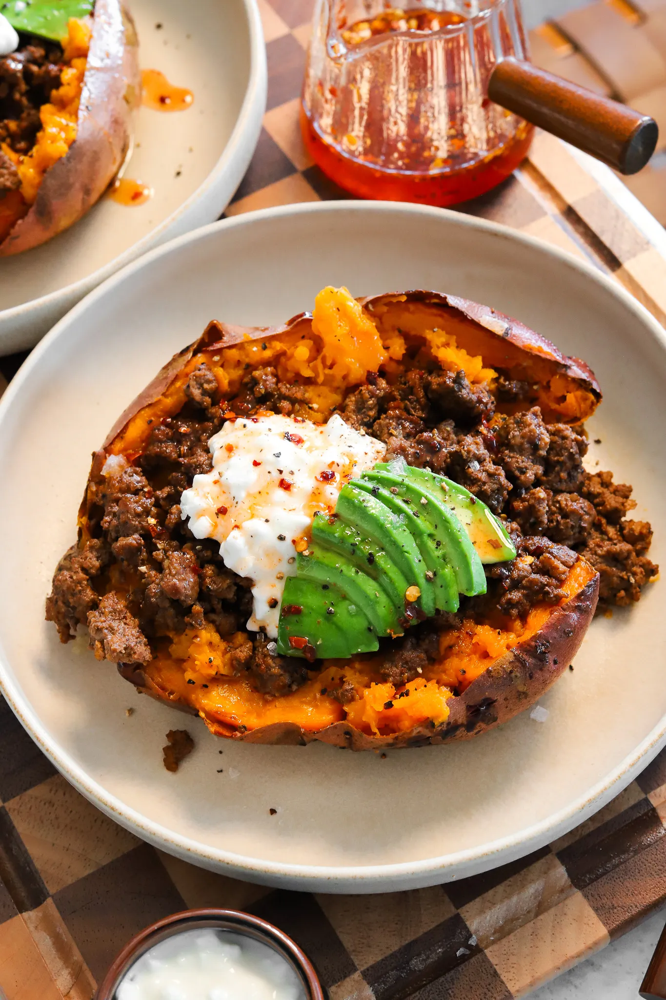
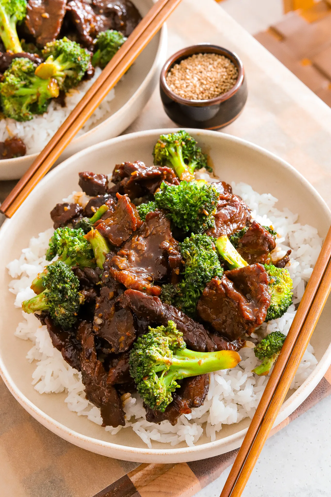
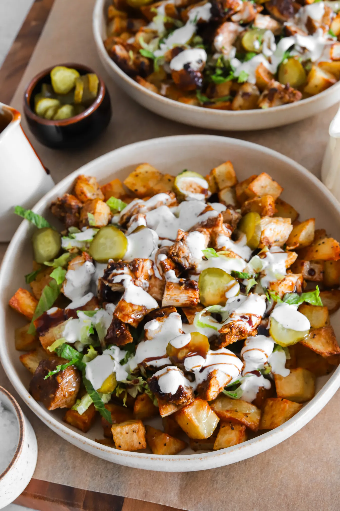

Dinner | Main Course
French Tacos (But Not Really Tacos)
I had French tacos three times on my last trip to France and I’ve been craving them ever since. They’re nothing like actual tacos, more like a pressed burrito loaded with meat, fries, and a creamy cheese sauce. It was the ultimate cheap comfort food, so of course I had to try making them at home and even better.
You Might Also Like

Loaded Sweet Potatoes with Spiced Beef and Hot Honey

Better-Than-Takeout Beef and Broccoli Stir Fry
